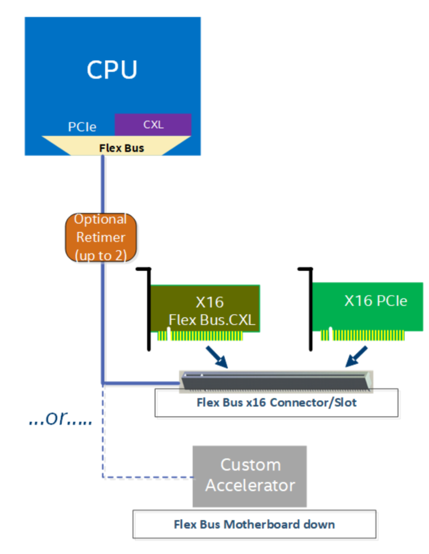
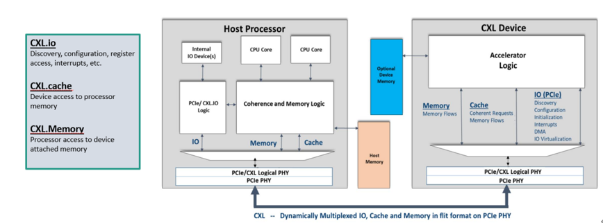
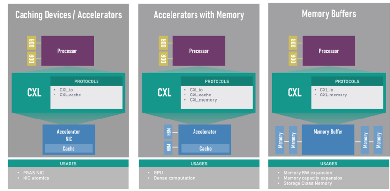
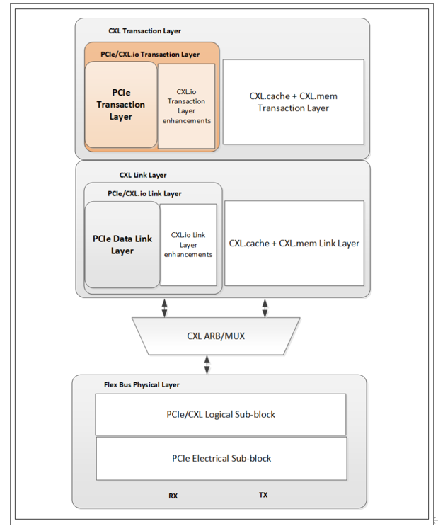
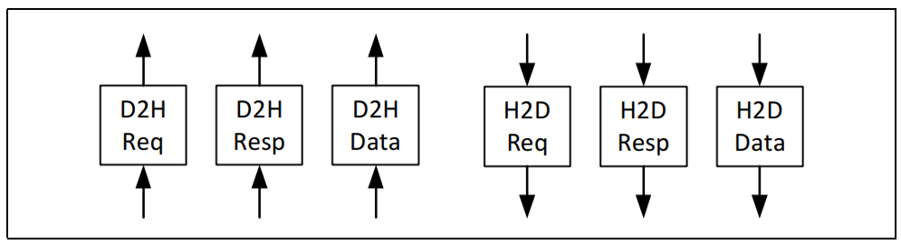
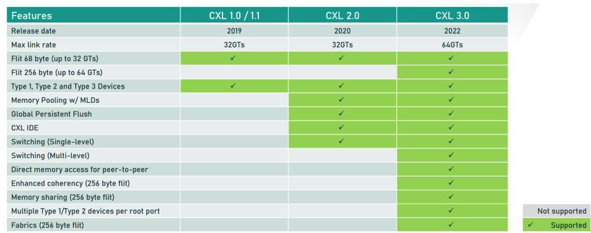

CXL基础
[toc]
Overview
CXL基于PCI Express 5.0的物理层基础设施。它旨在通过支持异构处理和内存系统，解决日益增长的高性能计算工作负载问题，可应用于人工智能、机器学习、分析、云基础设施、网络和边缘云化、通信系统和高性能计算等领域。
CXL支持在丰富协议之间的动态多路复用，包括I/O(CXL.io，基于PCIe)、缓存(CXL.cache) 和内存(CXL.memory)协议。
CXL支持在丰富协议之间的动态多路复用，包括I/O(CXL.io，基于PCIe)、缓存(CXL.cache) 和内存(CXL.memory)协议。
下图说明了CXL如何与PCIe实现完全互操作，因为CXL使用的是PCIe协议栈。CXL设备以PCIe Gen1数据速率启动Link Training，并使用PCIe 5.0规范中定义的Alternate Negotiation Protocol协商CXL作为操作协议，前提是其链路合作伙伴也能够支持CXL。利用PCIe 5.0基础架构，设备和平台可以非常轻松地采用CXL，而无需设计和验证PHY、通道、任何通道扩展设备。

CXL Device Type
CXL的所有Device都必须支持CXL.io，而CXL.cache和CXL.mem则是可选的，并根据具体用途而定。例如，没有任何附加内存的加速器将选择只实施 CXL.io和CXL.cache协议，而有附加内存的加速器将包括对所有三个协议的支持。同样，内存扩展设备将只支持 CXL.io和CXL.mem协议。
CXL.io协议以PCIe为基础，用于设备发现、配置、初始化、I/O虚拟化和直接内存访问(DMA)等功能，采用非一致性负载存储、生产者-消费者模型。虽然我们预计PCIe软件基础架构将被重复使用，但设备驱动程序将进行必要的增强，以利用 CXL.cache和CXL.mem等新功能，系统软件将对与新功能相关的新寄存器集进行编程。
CXL.cache协议使设备能够通过简单的请求和响应协议，从主机内存中缓存数据。主机处理器通过Snoop Messages管理缓存数据的一致性。
CXL.mem协议允许主机处理器访问连接到CXL Memroy Device。CXL.mem事务是简单的内存Load和Store事务，从主机处理器下游运行，主机处理器负责处理所有数据的一致性。

CXL Spec根据CXL Device支持的协议种类把CXL Device 分成了以下三种类型
Type 1 CXL Device:只实现了CXL.io和CXL.cache的CXL Device，比如自身没有内存的智能网卡。
Type 2 CXL Device:实现三种协议的CXL Device，比如自身有HBM内存的GPU卡。
Type 3 CXL Device:只实现了CXL.io和CXL.mem的CXL Device，比如CXL Memory Expander。

CXL.io Overview
CXL.io 为 I/O 设备提供non-coherent load/store接口。 下图显示了 CXL.io 事务层在 Flex Bus层结构中的位置。事务类型、事务数据包格式、基于信用的流量控制、虚拟通道管理和事务排序规则均遵循 PCIe 定义；详情请参考 PCI Express 5.0 Base Specification。

CXL.cache Overview
CXL.cache 协议将设备和主机之间的交互定义为一系列请求，每个请求至少有一个相关的响应信息，有时还有数据传输。接口由每个方向的三个通道组成：请求、响应和数据。 如下图所示，这些通道（CXL.cache Channels）按其方向（设备到主机的 D2H 和主机到设备的 H2D）和所承载的事务（请求、响应和数据）命名。独立通道允许不同类型的信息使用专用线路，从而实现解耦和更高的单线有效吞吐量。
CXL.cache 协议将设备和主机之间的交互定义为一系列请求，每个请求至少有一个相关的响应信息，有时还有数据传输。接口由每个方向的三个通道组成：请求、响应和数据。 如下图所示，这些通道（CXL.cache Channels）按其方向（设备到主机的 D2H 和主机到设备的 H2D）和所承载的事务（请求、响应和数据）命名。独立通道允许不同类型的信息使用专用线路，从而实现解耦和更高的单线有效吞吐量。

H2D Request从主机向设备发送请求。这些请求是用于保持一致性的snoops。设备可能会为snoops 返回数据。请求包含数据缓冲区的位置，任何返回数据都应写入该缓冲区。H2D Response携带ordering messages和写入数据。每个响应都带有原始设备请求中的请求标识符，以指示响应的路由。对于写入数据拉取响应，信息中包含应写入数据的位置。CXL.mem Overview
CXL.mem Overview
CXL Memory Protocol称为CXL.mem，是CPU与Device Memory之间的事务接口。它在跨Die通信时使用Compute Express Link(CXL)的Phy和Link Layer。该协议可用于多种不同的内存连接选项，包括Memory Controller位于Host CPU中、Memory Controller位于Accelerator设备中或Memory Controller移至内存缓冲芯片中。它还适用于不同的内存类型（Volatile， Persistent）和配置（Flat， Hierarchical）。
CPU Coherency Engine通过CXL.mem中的 Request和Response与设备内存进行通讯。在此配置中，CPU Coherency Engine被视为 CXL.mem Master， Mem Device被视为 CXL.mem Subordinate。CXL.mem Master负责发出 CXL.mem 请求（读取、写入等）， CXL.mem Subordinate负责响应 CXL.mem 请求（数据、完成等）。
当Subordinate Device是一个Accelerator时，CXL.mem Protocol假定设备中存在Device Coherency Engine(DCOH)。DCOH负责执行一致性相关指令，如根据 CXL.mem 命令窥探设备缓存。
CXL.mem将Master到Subordinate的交易称为 "M2S"，将Subordinate到Master的交易称为 "S2M"。
在 M2S 事务中，有两种报文类别：
• 不含数据的请求--通称为请求（Req）
• 带数据的申请--（RwD）
同样，在 S2M 事务中，也有两种报文类别：
• 无数据响应 -- 一般称为无数据响应 (NDR)
• 带数据的响应--一般称为数据响应（DRS）
不同版本CXL差异

固件职责
Firmware除了要完成Device的枚举之外，还需要完成以下任务。
-
对于CXL2.0 Device，要完成对Component Register中HDM Decoder的配置，同时使能Component Register中的CXL HDM Decoder Global Control Register (Offset 04h) ->HDM Decoder Enable来关闭DVSEC ID 0中Range Size和Range Base对Memory Address的解码。
-
对于CXL 1.1 Device，要完成对DVSEC ID 0中Range Size和Range Base的配置。
-
完成对CXL Root Port和CXL Switch Upstream Port中HDM Decoder的配置。
-
设置PCIe DVSEC for CXL Device和CXL 2.0 Extensions DVSEC for Ports上面的Mem_Enable。
CXL HDM Decoder 的作用
- 地址解码：HDM Decoder 的主要功能是将来自主机（Host）的内存访问请求解码为设备内存地址。这意味着当处理器发出内存读写请求时，HDM Decoder 会将这些请求转换为具体的设备内存地址，以便正确地访问数据。
- 内存管理：HDM Decoder 帮助管理主机与设备内存之间的地址映射，确保主机能够透明地访问设备内存，就像访问本地内存一样。
- 支持多种内存类型：HDM Decoder 可以支持多种内存类型，包括 DRAM、NVRAM 等，满足不同应用的需求。